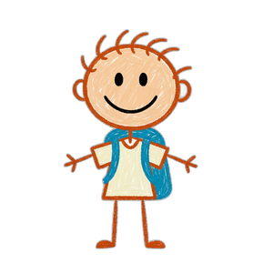

1 · Editorial
2 · Chunky
3 · Paper
4 · Hand-drawn
Chunky
· Toca Boca / Sago Mini / Khan Kids — warm 3D pills, kid-game playful
← Back
Create
Color
Light
Sound
Rhythm
Color your
friend
Next →
Pick a color and tap your friend

Tomato
▾
Erase
Undo